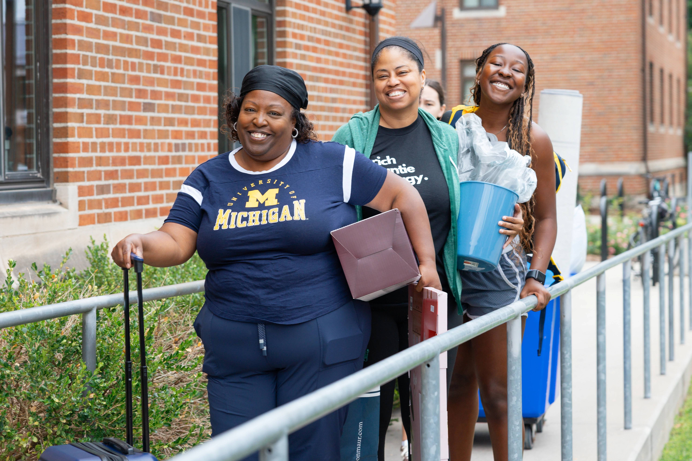
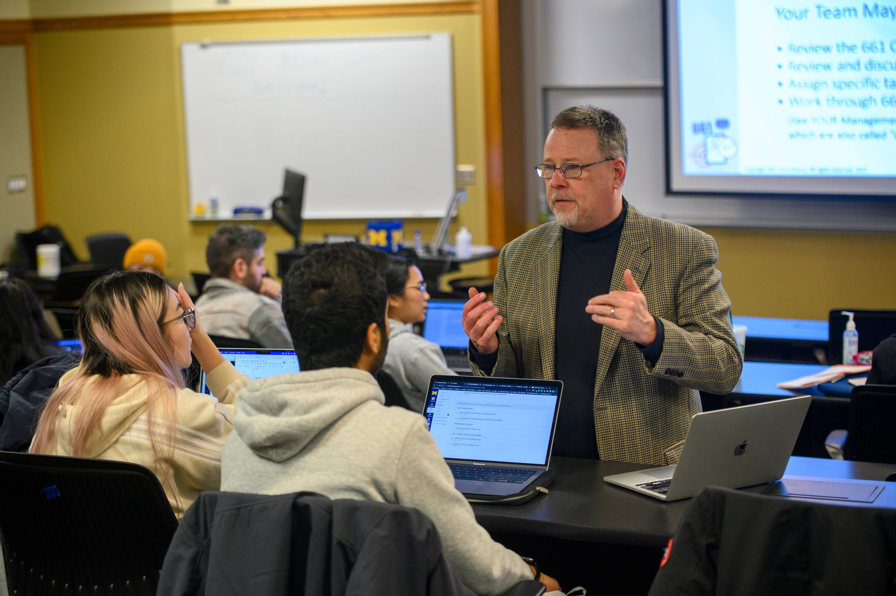

Build a Strategic Network Plan
-
Find Alumni
-
CDO Resources
-
UMSI LinkedIn Group
Strategies for finding and connecting with UMSI alumni. -
CareerLink
Access UMSI alumni and employer contacts. -
UCan Network
University-wide alumni networking platform.
-
UMSI LinkedIn Group
-
Your Network
-
Your Personal Network: Friends and Peers
 -
Your Professional Network: Faculty, Supervisors, Mentors
 - LinkedIn Search
-
Your Personal Network: Friends and Peers
-
CDO Resources
-
Get a Response
Writing Your LinkedIn Message to Get a Response
- Be (extra) concise - LinkedIn limits you to 300 characters
- Start with context that connects you
- Clearly state what you're looking for & why you're reaching out
- Say thank you
Write an Email to Get a Response
- Write a descriptive & enticing subject line
- Start with context that connects you
- Clearly state what you're looking for & why you're reaching out
- Say thank you